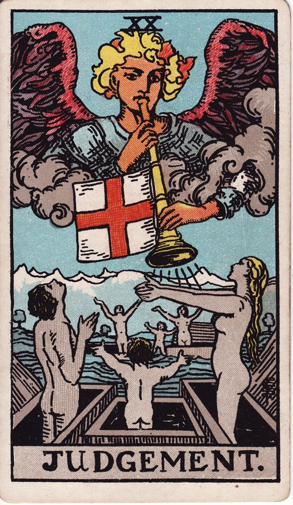

메이저 아르카나 · 타로 카드 백과사전
심판 (Judgement)

정방향
키워드: 깨어나는 자각 · 중요한 결단 · 새로운 부름 · 돌아보는 용기 · 발판이 된 경험 · 울리는 각성
조언: 그동안의 경험을 발판 삼아 중요한 결단을 내려보세요.
연애운
솔로
과거의 경험을 발판 삼아 새로운 마음으로 사랑을 시작할 준비가 되는 시기입니다. 지난 경험에서 배운 것을 바탕으로 자신 있게 새 마음을 열어보세요.
커플
지난 관계를 정리하고 새로운 마음으로 나아갈 결단의 시기입니다. 지난 방식을 정리하고 새로운 다짐으로 나아가보세요.
재물운
소비
그동안 쌓아둔 지출 내역을 정리하며 재정 습관을 새롭게 세우기 좋은 시기입니다. 필요 없는 항목은 과감히 정리하고 우선순위를 다시 정해보세요.
투자
그동안의 경험을 바탕으로 중요한 재정 결단을 내릴 시기입니다. 망설여온 결정이 있다면 지금이 실행에 옮길 때입니다.
취업운
구직
쌓아온 경력을 자신 있게 어필하면 원하는 자리를 얻을 수 있는 결단의 시기입니다. 이력서와 면접 답변에 그동안의 성과를 구체적으로 담아보세요.
이직
쌓아온 경력이 인정받으며 원하던 자리로 옮길 기회가 열리는 시기입니다. 주저하지 말고 옮기고 싶었던 자리에 지금 지원해보세요.
직장운
팀워크
팀에서 쌓아온 협업 경험이 중요한 결정을 내리는 데 든든한 힘이 되는 시기입니다. 팀원들의 의견도 함께 모아 결정에 무게를 실어보세요.
개인성과
맡아온 업무를 마무리 짓고 다음 역할로 넘어갈 결정을 내릴 시기입니다. 인수인계를 꼼꼼히 챙기면 새로운 역할에도 자신 있게 임할 수 있습니다.
사업운
창업준비
그동안 준비해온 사업 구상을 구체적인 실행으로 옮길 결단의 시기입니다. 막연했던 계획을 사업계획서 같은 구체적인 형태로 정리해보세요.
운영중
쌓아온 노하우로 사업의 중요한 전환점을 자신 있게 맞이하는 시기입니다. 그동안 미뤄왔던 확장이나 개편을 지금 결정해도 좋습니다.
학업운
시험준비
그동안 공부한 내용을 총정리하며 시험에 자신 있게 임할 시기입니다. 막판까지 미루지 말고 취약한 부분부터 우선 점검해보세요.
진로고민
여러 갈래로 고민해온 진로 중 하나를 확실히 선택할 결단의 시기입니다. 마지막까지 망설여졌던 선택지를 과감히 정리하고 나아가보세요.
건강운
신체
몸 상태를 있는 그대로 인정하고 무리한 부분을 내려놓는 회복의 시기입니다. 애써 외면했던 통증이나 피로 신호가 있다면 지금 진지하게 들여다보세요.
정신
지난 일을 정리하며 마음의 짐을 내려놓게 되는 시기입니다. 정리된 마음이 다음 단계로 나아갈 힘을 줍니다.
대인관계운
새로운 인연
지난 인연에 얽매이지 않고 열린 마음으로 새로운 사람들을 마주할 준비가 되는 시기입니다. 예전 관계의 틀에 상대를 끼워 맞추지 말고 있는 그대로 바라봐주세요.
기존 관계
소원해졌던 인간관계를 되짚어보고 새로운 태도로 다가갈 결심이 서는 시기입니다. 연락이 뜸했던 사람에게 먼저 손을 내밀어보는 용기가 필요합니다.
명예운
그동안의 노력을 제대로 평가받는 시기입니다. 스스로를 낮추기보다 이룬 것을 당당히 드러내도 좋습니다.
이사운
지난 시간을 정리하고 새로운 곳으로 이동할 결단의 시기입니다. 지난 시간을 정리한 만큼 새로운 곳에서 홀가분하게 시작할 수 있습니다.
자식운
아이와의 지난 갈등을 돌아보며 관계를 새롭게 정립할 시기입니다. 감정적으로 대응했던 순간이 있었다면 솔직하게 사과하고 다시 시작해보세요.
역방향
키워드: 과거에 대한 후회 · 미뤄진 결단 · 스스로에 대한 의심 · 묶여 있는 과거 · 자책의 늪 · 내려놓지 못한 죄책감
조언: 과거에 발목 잡히지 말고 지금의 나를 있는 그대로 받아들여보세요.
연애운
솔로
과거의 상처에 대한 후회로 새로운 시작을 망설이고 있을 수 있습니다. 후회에 머물기보다 그 경험에서 배운 것에 집중해보세요.
커플
지난 잘못을 반복할까 하는 두려움이 결단을 미루게 할 수 있습니다. 같은 실수를 반복하지 않도록 구체적인 대안을 준비해보세요.
재물운
소비
과거의 재정 실수를 반복하지 않도록 돌아봐야 하는 시기입니다. 같은 실수를 되풀이하지 않도록 구체적인 원칙을 세워보세요.
투자
과거의 손실에 대한 두려움이 필요한 결단을 미루게 할 수 있습니다. 두려움에 머물기보다 필요한 결단을 조금씩 내려보세요.
취업운
구직
예전 지원 실패의 기억이 다시 지원서를 쓰는 것을 망설이게 할 수 있습니다. 떨어진 이유를 냉정하게 분석해두면 다음 지원에서는 다른 결과를 만들 수 있습니다.
이직
과거의 실수에 발목 잡혀 결단을 미루고 있을 수 있는 시기입니다. 과거의 실수를 인정하고 다음 결단을 준비해보세요.
직장운
팀워크
팀 내에서 겪었던 실수가 새로운 결정을 내리는 데 망설임을 남길 수 있습니다. 그 실수를 팀원들과 솔직히 공유하면 오히려 다음 결정에 힘을 실어줄 수 있습니다.
개인성과
이전 업무에서 겪은 실수의 기억이 새로운 업무 시도를 주저하게 만들 수 있습니다. 그때와 지금은 다르다는 것을 스스로에게 분명히 알려주세요.
사업운
창업준비
예전 창업 실패의 기억이 새로운 사업 구상을 망설이게 할 수 있습니다. 그때 놓쳤던 부분을 구체적으로 짚어보면 이번엔 다른 결과를 만들 수 있습니다.
운영중
사업 운영 중 놓쳤던 부분을 인정하지 않으면 같은 문제가 되풀이될 수 있습니다. 문제의 원인을 구성원들과 함께 짚어보는 시간을 가져보세요.
학업운
시험준비
과거 성적에 대한 후회가 새로운 도전을 막고 있을 수 있습니다. 후회에 머물기보다 다음 도전을 위한 준비에 집중해보세요.
진로고민
과거의 실패에 대한 두려움이 진로 결정을 미루게 할 수 있습니다. 두려움을 인정하고 조금씩 결정을 위한 발걸음을 내디뎌보세요.
건강운
신체
과거의 무리가 아직 몸에 남아 있을 수 있는 시기입니다. 남아있는 무리를 무시하지 말고 충분히 회복할 시간을 가지세요.
정신
지난 일에 대한 후회가 계속 마음을 무겁게 할 수 있습니다. 후회를 붙잡기보다 지금의 나를 있는 그대로 받아들여보세요.
대인관계운
새로운 인연
예전 관계에서 받은 상처 때문에 새로운 사람에게 곁을 잘 주지 못할 수 있는 시기입니다. 서두르지 않아도 괜찮으니 마음이 열리는 만큼만 다가가보세요.
기존 관계
예전에 소홀했던 태도에 대한 자책이 관계 회복을 망설이게 할 수 있습니다. 자책은 잠시 내려두고 지금 할 수 있는 작은 행동부터 시작해보세요.
명예운
과거의 평판에 발목 잡혀 있을 수 있는 시기입니다. 과거에 머물지 말고 지금의 모습으로 다시 평가받아보세요.
이사운
과거에 대한 미련이 이동 결정을 늦추고 있을 수 있습니다. 미련을 정리하고 결정을 위한 용기를 내보세요.
자식운
과거의 방식에 대한 후회가 새로운 시도를 막고 있을 수 있습니다. 후회에 머물지 말고 새로운 시도를 조금씩 해보세요.
같은 슈트: 바보 · 마법사 · 여사제 · 여황제 · 황제 · 교황 · 연인 · 전차 · 힘 · 은둔자 · 운명의 수레바퀴 · 정의 · 매달린 사람 · 죽음 · 절제 · 악마 · 탑 · 별 · 달 · 태양 · 심판 · 세계
홈에서 직접 카드 뽑아보기 ↗